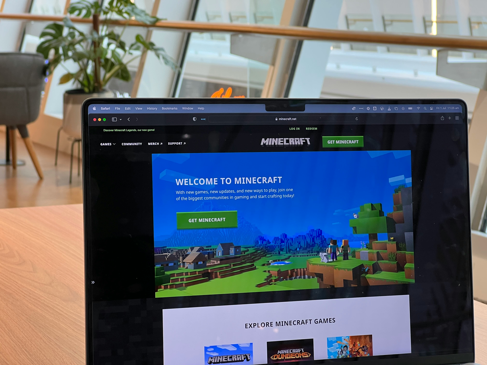

Starting Out!
October 05, 2026 by Sydney :P

I've got back into Minecraft after all this time!
One of my favourite childhood games ever that I used to play with my little brother.
I remember us dedicating so much time to our main world on our xbox like it was yesterday.
This does mean I'll have to adjust to mouse and keyboard controlls which is a lot harder than I though.
Wish me luck cause I'm going to need it. (T-T)
First impressions, it's pretty different from how I remember.
I mean the start of collecting wood, building your first house and some weapons feels the same but a lot has changed.
I love the new look of the biomes and the new animals too.
On the downside, the new types of materials, like wood, and all the new recipes are a bit daunting.
I have no idea what they're used for or what to prioritze.
Overall, a good time, would totally reccomend.
I'll keep you guys updated!